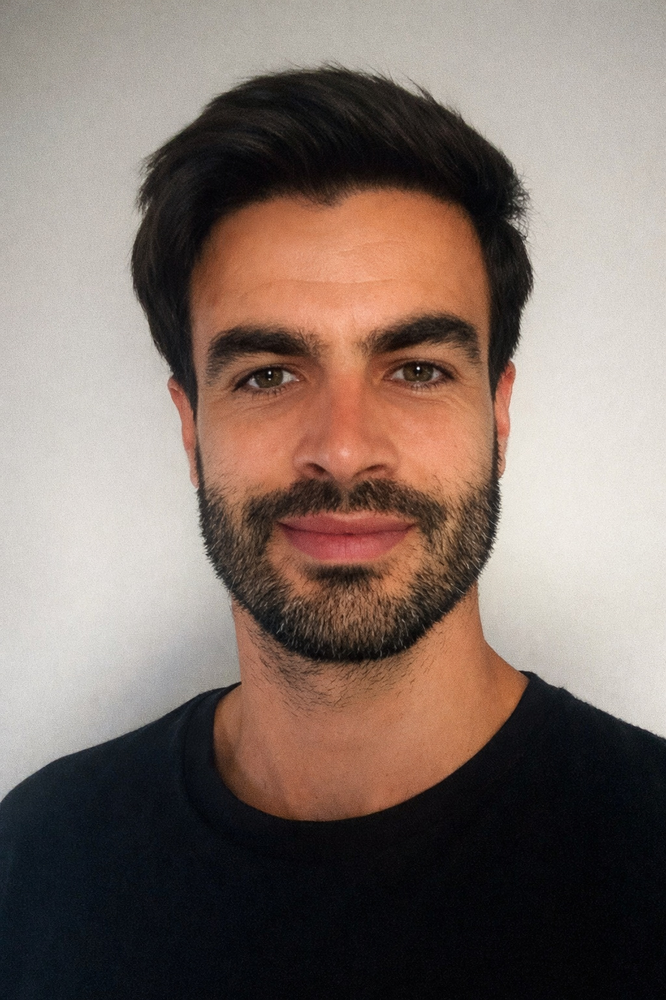
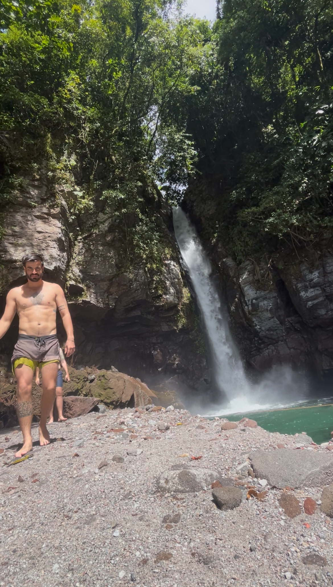
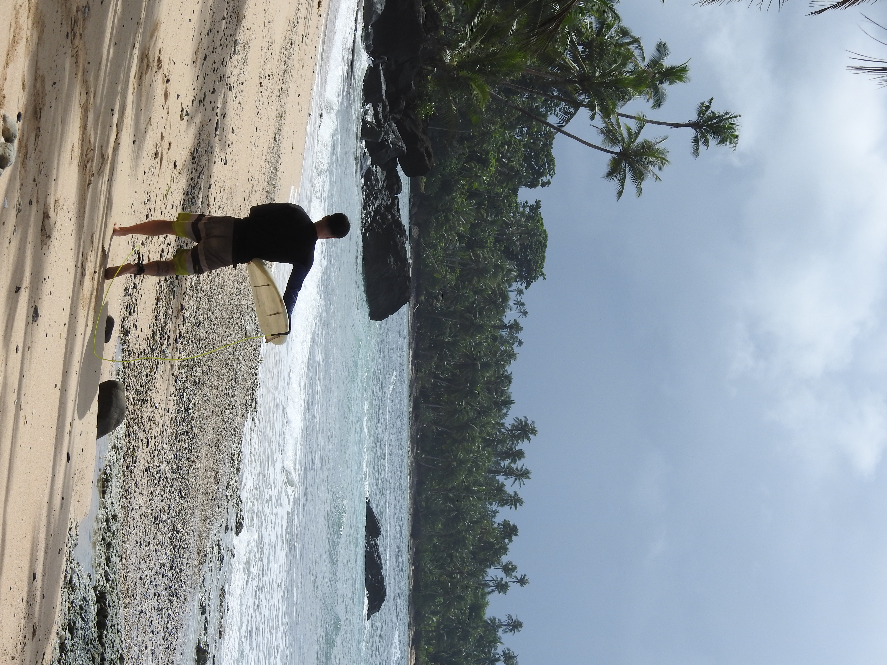
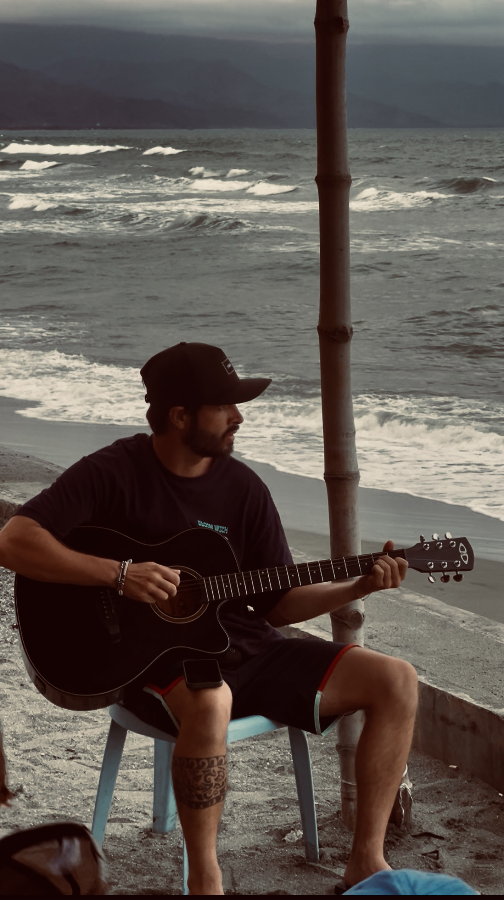
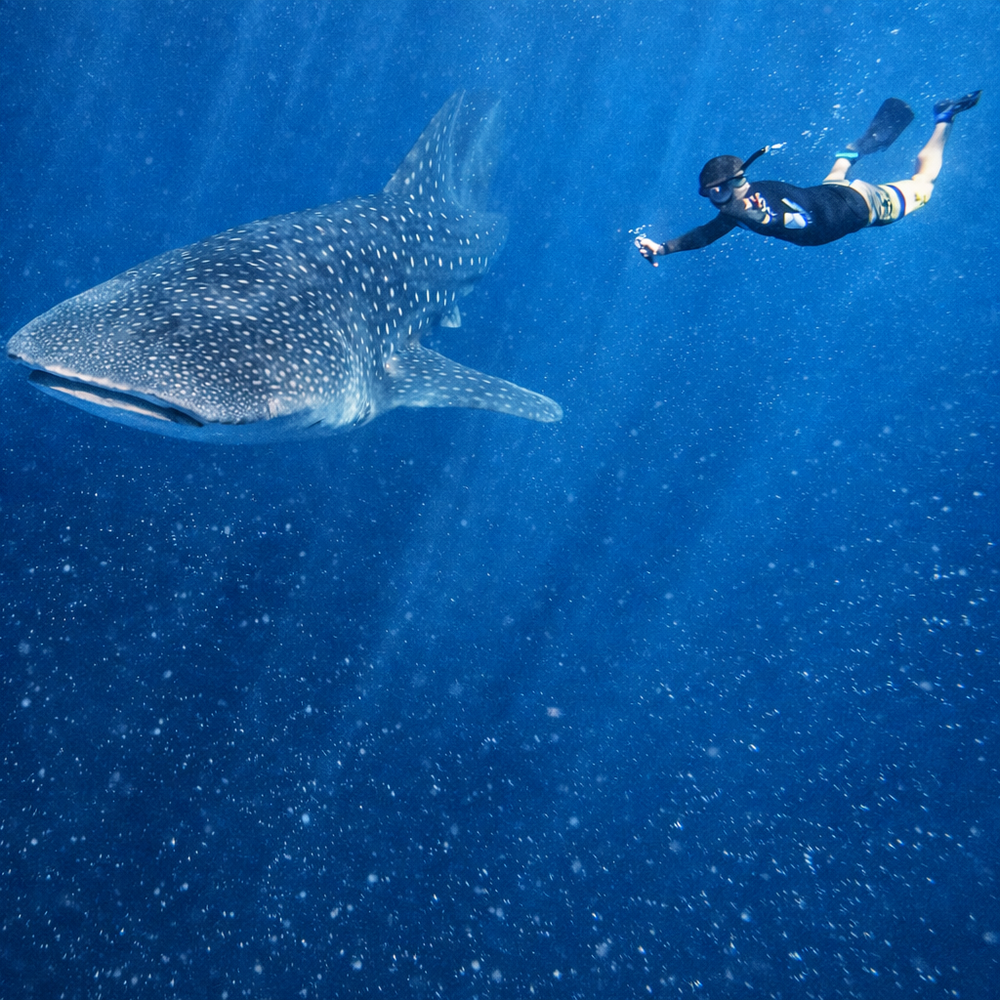

I turn raw data into stories worth telling — SQL, Python, Power BI.
I'm 36, a data analyst with a backpack full of miles and the conviction that data always has something to tell. I studied Sports Science in Barcelona, worked for years as a personal trainer, and lived in Spain, Colombia, Chicago, Mexico, and spent five months in the Philippines. Each place taught me that behind every business decision—from training loads to restaurant flows to tourism metrics—there are numbers that speak clearly if you know how to listen.


"Data has more stories when you've lived them."

"Every city taught me to adapt. Every dataset does the same."

"From sport science to data science — the metrics never lie."
"Where data analysts dream."

"The biggest creatures are the gentlest."
"Some questions only the ocean can answer."
Data Analytics Bootcamp
SQL for Data Science
Excel for Data Analysis
Project Management Foundations
Data Science & AI Fundamentals
End-to-end ETL pipeline on official Philippine tourism data (2015–2023). Automated extraction from annual PDF reports, multi-source cleaning with Python, and Power BI dashboard with Azure Maps.
"Born during a 5-month stay in the Philippines. The data told a story I was living."
View on GitHub →GDPR-compliant data pipeline for a fictional e-commerce. Synthetic data generation with Faker, unstructured PII detection using Ollama (llama3.2), and anonymisation techniques: SHA2 hashing, masking, noise injection, k-anonymity.
"Started as curiosity about anonymising data before sending it to AI. Became a full privacy engineering project."
View on GitHub →Sales forecasting model for a real healthcare clinic using XGBoost. Multi-source merge: bookings, weather, local events, public holidays. Progression: Linear Reg. (R²=0.61) → XGBoost (R²=0.74) → Enriched XGBoost (R²=0.79).
"My first project with real data. Models improve when you understand the business, not just the algorithms."
View on GitHub →If you think we'd be a good fit — drop me a line.